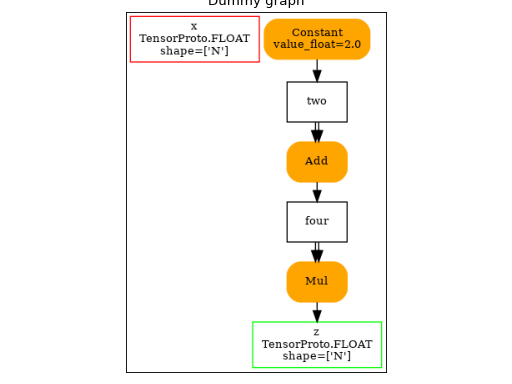

plotting¶
Dot¶
- onnx_array_api.plotting.dot_plot.to_dot(proto: ModelProto, recursive: bool = False, prefix: str = '', use_onnx: bool = False, add_functions: bool = True, rt_shapes: Dict[str, Tuple[int, ...]] | None = None, **params) str[source]¶
Produces a DOT language string for the graph.
- Parameters:
params – additional params to draw the graph
recursive – also show subgraphs inside operator like Scan
prefix – prefix for every node name
use_onnx – use onnx dot format instead of this one
add_functions – add functions to the graph
rt_shapes – indicates shapes obtained from the execution or inference
- Returns:
string
Default options for the graph are:
options = { 'orientation': 'portrait', 'ranksep': '0.25', 'nodesep': '0.05', 'width': '0.5', 'height': '0.1', 'size': '7', }
One example:
<<<
import numpy as np # B from onnx_array_api.npx import absolute, jit_onnx from onnx_array_api.plotting.dot_plot import to_dot def l1_loss(x, y): return absolute(x - y).sum() def l2_loss(x, y): return ((x - y) ** 2).sum() def myloss(x, y): return l1_loss(x[:, 0], y[:, 0]) + l2_loss(x[:, 1], y[:, 1]) jitted_myloss = jit_onnx(myloss) x = np.array([[0.1, 0.2], [0.3, 0.4]], dtype=np.float32) y = np.array([[0.11, 0.22], [0.33, 0.44]], dtype=np.float32) res = jitted_myloss(x, y) print(res)
>>>
0.042![digraph{
size=7;
orientation=portrait;
ranksep=0.25;
nodesep=0.05;
x0 [shape=box color=red label="x0\nTensorProto.FLOAT\nshape=['', '']" fontsize=10];
x1 [shape=box color=red label="x1\nTensorProto.FLOAT\nshape=['', '']" fontsize=10];
r__32 [shape=box color=green label="r__32\nTensorProto.FLOAT" fontsize=10];
cst__0 [shape=box label="cst__0" fontsize=10];
Constant [shape=box style="filled,rounded" color=orange label="Constant\nvalue=[1]" fontsize=10];
Constant -> cst__0;
cst__1 [shape=box label="cst__1" fontsize=10];
Constant1 [shape=box style="filled,rounded" color=orange label="Constant\nvalue=[2]" fontsize=10];
Constant1 -> cst__1;
cst__2 [shape=box label="cst__2" fontsize=10];
Constant12 [shape=box style="filled,rounded" color=orange label="Constant\nvalue=[1]" fontsize=10];
Constant12 -> cst__2;
cst__3 [shape=box label="cst__3" fontsize=10];
Constant123 [shape=box style="filled,rounded" color=orange label="Constant\nvalue=[1]" fontsize=10];
Constant123 -> cst__3;
cst__4 [shape=box label="cst__4" fontsize=10];
Constant1234 [shape=box style="filled,rounded" color=orange label="Constant\nvalue=[2]" fontsize=10];
Constant1234 -> cst__4;
cst__5 [shape=box label="cst__5" fontsize=10];
Constant12345 [shape=box style="filled,rounded" color=orange label="Constant\nvalue=[1]" fontsize=10];
Constant12345 -> cst__5;
cst__6 [shape=box label="cst__6" fontsize=10];
Constant123456 [shape=box style="filled,rounded" color=orange label="Constant\nvalue=[0]" fontsize=10];
Constant123456 -> cst__6;
cst__7 [shape=box label="cst__7" fontsize=10];
Constant1234567 [shape=box style="filled,rounded" color=orange label="Constant\nvalue=[1]" fontsize=10];
Constant1234567 -> cst__7;
cst__8 [shape=box label="cst__8" fontsize=10];
Constant12345678 [shape=box style="filled,rounded" color=orange label="Constant\nvalue=[1]" fontsize=10];
Constant12345678 -> cst__8;
cst__9 [shape=box label="cst__9" fontsize=10];
Constant123456789 [shape=box style="filled,rounded" color=orange label="Constant\nvalue=[0]" fontsize=10];
Constant123456789 -> cst__9;
cst__10 [shape=box label="cst__10" fontsize=10];
Constant12345678910 [shape=box style="filled,rounded" color=orange label="Constant\nvalue=[1]" fontsize=10];
Constant12345678910 -> cst__10;
cst__11 [shape=box label="cst__11" fontsize=10];
Constant1234567891011 [shape=box style="filled,rounded" color=orange label="Constant\nvalue=[1]" fontsize=10];
Constant1234567891011 -> cst__11;
r__12 [shape=box label="r__12" fontsize=10];
Slice [shape=box style="filled,rounded" color=orange label="Slice" fontsize=10];
x0 -> Slice;
cst__0 -> Slice;
cst__1 -> Slice;
cst__2 -> Slice;
Slice -> r__12;
cst__13 [shape=box label="cst__13" fontsize=10];
Constant123456789101112 [shape=box style="filled,rounded" color=orange label="Constant\nvalue=[1]" fontsize=10];
Constant123456789101112 -> cst__13;
r__14 [shape=box label="r__14" fontsize=10];
Slice1 [shape=box style="filled,rounded" color=orange label="Slice" fontsize=10];
x1 -> Slice1;
cst__3 -> Slice1;
cst__4 -> Slice1;
cst__5 -> Slice1;
Slice1 -> r__14;
cst__15 [shape=box label="cst__15" fontsize=10];
Constant12345678910111213 [shape=box style="filled,rounded" color=orange label="Constant\nvalue=[1]" fontsize=10];
Constant12345678910111213 -> cst__15;
r__16 [shape=box label="r__16" fontsize=10];
Slice12 [shape=box style="filled,rounded" color=orange label="Slice" fontsize=10];
x0 -> Slice12;
cst__6 -> Slice12;
cst__7 -> Slice12;
cst__8 -> Slice12;
Slice12 -> r__16;
cst__17 [shape=box label="cst__17" fontsize=10];
Constant1234567891011121314 [shape=box style="filled,rounded" color=orange label="Constant\nvalue=[1]" fontsize=10];
Constant1234567891011121314 -> cst__17;
r__18 [shape=box label="r__18" fontsize=10];
Slice123 [shape=box style="filled,rounded" color=orange label="Slice" fontsize=10];
x1 -> Slice123;
cst__9 -> Slice123;
cst__10 -> Slice123;
cst__11 -> Slice123;
Slice123 -> r__18;
cst__19 [shape=box label="cst__19" fontsize=10];
Constant123456789101112131415 [shape=box style="filled,rounded" color=orange label="Constant\nvalue=[1]" fontsize=10];
Constant123456789101112131415 -> cst__19;
r__20 [shape=box label="r__20" fontsize=10];
Squeeze [shape=box style="filled,rounded" color=orange label="Squeeze" fontsize=10];
r__12 -> Squeeze;
cst__13 -> Squeeze;
Squeeze -> r__20;
r__21 [shape=box label="r__21" fontsize=10];
Squeeze1 [shape=box style="filled,rounded" color=orange label="Squeeze" fontsize=10];
r__14 -> Squeeze1;
cst__15 -> Squeeze1;
Squeeze1 -> r__21;
r__22 [shape=box label="r__22" fontsize=10];
Squeeze12 [shape=box style="filled,rounded" color=orange label="Squeeze" fontsize=10];
r__16 -> Squeeze12;
cst__17 -> Squeeze12;
Squeeze12 -> r__22;
r__23 [shape=box label="r__23" fontsize=10];
Squeeze123 [shape=box style="filled,rounded" color=orange label="Squeeze" fontsize=10];
r__18 -> Squeeze123;
cst__19 -> Squeeze123;
Squeeze123 -> r__23;
r__24 [shape=box label="r__24" fontsize=10];
Sub [shape=box style="filled,rounded" color=orange label="Sub" fontsize=10];
r__20 -> Sub;
r__21 -> Sub;
Sub -> r__24;
r__25 [shape=box label="r__25" fontsize=10];
Sub1 [shape=box style="filled,rounded" color=orange label="Sub" fontsize=10];
r__22 -> Sub1;
r__23 -> Sub1;
Sub1 -> r__25;
r__26 [shape=box label="r__26" fontsize=10];
Constant12345678910111213141516 [shape=box style="filled,rounded" color=orange label="Constant\nvalue=2" fontsize=10];
Constant12345678910111213141516 -> r__26;
r__27 [shape=box label="r__27" fontsize=10];
CastLike [shape=box style="filled,rounded" color=orange label="CastLike" fontsize=10];
r__26 -> CastLike;
r__24 -> CastLike;
CastLike -> r__27;
r__28 [shape=box label="r__28" fontsize=10];
Abs [shape=box style="filled,rounded" color=orange label="Abs" fontsize=10];
r__25 -> Abs;
Abs -> r__28;
r__29 [shape=box label="r__29" fontsize=10];
Pow [shape=box style="filled,rounded" color=orange label="Pow" fontsize=10];
r__24 -> Pow;
r__27 -> Pow;
Pow -> r__29;
r__30 [shape=box label="r__30" fontsize=10];
ReduceSum [shape=box style="filled,rounded" color=orange label="ReduceSum\nkeepdims=0" fontsize=10];
r__28 -> ReduceSum;
ReduceSum -> r__30;
r__31 [shape=box label="r__31" fontsize=10];
ReduceSum1 [shape=box style="filled,rounded" color=orange label="ReduceSum\nkeepdims=0" fontsize=10];
r__29 -> ReduceSum1;
ReduceSum1 -> r__31;
Add [shape=box style="filled,rounded" color=orange label="Add" fontsize=10];
r__30 -> Add;
r__31 -> Add;
Add -> r__32;
}](../_images/graphviz-bc025b7edbe7330de0b79c2b2cb4f23ade71e4df.png)
- onnx_array_api.plotting.graphviz_helper.plot_dot(dot: str | ModelProto, ax: matplotlib.axis.Axis | None = None, engine: str = 'dot', figsize: Tuple[int, int] | None = None) matplotlib.axis.Axis[source]¶
Draws a dot graph into a matplotlib graph.
- Parameters:
dot – dot graph or ModelProto
image – output image, None, just returns the output
engine – dot or neato
figsize – figsize of ax is None
- Returns:
Graphviz output or, the dot text if image is None
(
Source code,png,hires.png,pdf)
{kind=link}
{kind=link}
Statistics¶
- onnx_array_api.plotting.stat_plot.plot_ort_profile(df: DataFrame, ax0: Any | None = None, ax1: Any | None = None, title: str | None = None) Any[source]¶
Plots time spend in computation based on dataframe produced by function
ort_profile.- Parameters:
df – dataframe
ax0 – first axis to draw time
ax1 – second axis to draw occurences
title – graph title
- Returns:
ax0
See Profiling for an example.
Text¶
- onnx_array_api.plotting.text_plot.onnx_text_plot_tree(node)[source]¶
Gives a textual representation of a tree ensemble.
- Parameters:
node – TreeEnsemble*
- Returns:
text
<<<
import numpy from sklearn.datasets import load_iris from sklearn.tree import DecisionTreeRegressor from skl2onnx import to_onnx from onnx_array_api.plotting.text_plot import onnx_text_plot_tree iris = load_iris() X, y = iris.data.astype(numpy.float32), iris.target clr = DecisionTreeRegressor(max_depth=3) clr.fit(X, y) onx = to_onnx(clr, X) res = onnx_text_plot_tree(onx.graph.node[0]) print(res)
>>>
n_targets=1 n_trees=1 ---- treeid=0 n X3 <= np.float32(0.8) -n X3 <= np.float32(1.75) -n X2 <= np.float32(4.85) -f 0:2 +f 0:1.67 +n X2 <= np.float32(4.95) -f 0:1.67 +f 0:1.02 +f 0:0
- onnx_array_api.plotting.text_plot.onnx_text_plot_io(model, verbose=False, att_display=None)[source]¶
Displays information about input and output types.
- Parameters:
model – ONNX graph
verbose – display debugging information
- Returns:
str
An ONNX graph is printed the following way:
<<<
import numpy from sklearn.cluster import KMeans from skl2onnx import to_onnx from onnx_array_api.plotting.text_plot import onnx_text_plot_io x = numpy.random.randn(10, 3) y = numpy.random.randn(10) model = KMeans(3) model.fit(x, y) onx = to_onnx(model, x.astype(numpy.float32), target_opset=15) text = onnx_text_plot_io(onx, verbose=False) print(text)
>>>
opset: domain='' version=15 input: name='X' type=dtype('float32') shape=['', 3] init: name='Ad_Addcst' type=float32 shape=(3,) init: name='Ge_Gemmcst' type=float32 shape=(3, 3) init: name='Mu_Mulcst' type=float32 shape=(1,) output: name='label' type=dtype('int64') shape=[''] output: name='scores' type=dtype('float32') shape=['', 3]
- onnx_array_api.plotting.text_plot.onnx_simple_text_plot(model, verbose=False, att_display=None, add_links=False, recursive=False, functions=True, raise_exc=True, sub_graphs_names=None, level=1, indent=True)[source]¶
Displays an ONNX graph into text.
- Parameters:
model – ONNX graph
verbose – display debugging information
att_display – list of attributes to display, if None, a default list if used
add_links – displays links of the right side
recursive – display subgraphs as well
functions – display functions as well
raise_exc – raises an exception if the model is not valid, otherwise tries to continue
sub_graphs_names – list of sub-graphs names
level – sub-graph level
indent – use indentation or not
- Returns:
str
An ONNX graph is printed the following way:
<<<
import numpy from sklearn.cluster import KMeans from skl2onnx import to_onnx from onnx_array_api.plotting.text_plot import onnx_simple_text_plot x = numpy.random.randn(10, 3) y = numpy.random.randn(10) model = KMeans(3) model.fit(x, y) onx = to_onnx(model, x.astype(numpy.float32), target_opset=15) text = onnx_simple_text_plot(onx, verbose=False) print(text)
>>>
opset: domain='' version=15 input: name='X' type=dtype('float32') shape=['', 3] init: name='Ad_Addcst' type=float32 shape=(3,) -- array([1.112, 4.024, 0.746], dtype=float32) init: name='Ge_Gemmcst' type=float32 shape=(3, 3) init: name='Mu_Mulcst' type=float32 shape=(1,) -- array([0.], dtype=float32) ReduceSumSquare(X, axes=[1], keepdims=1) -> Re_reduced0 Mul(Re_reduced0, Mu_Mulcst) -> Mu_C0 Gemm(X, Ge_Gemmcst, Mu_C0, alpha=-2.00, transB=1) -> Ge_Y0 Add(Re_reduced0, Ge_Y0) -> Ad_C01 Add(Ad_Addcst, Ad_C01) -> Ad_C0 ArgMin(Ad_C0, axis=1, keepdims=0) -> label Sqrt(Ad_C0) -> scores output: name='label' type=dtype('int64') shape=[''] output: name='scores' type=dtype('float32') shape=['', 3]
The same graphs with links.
<<<
import numpy from sklearn.cluster import KMeans from skl2onnx import to_onnx from onnx_array_api.plotting.text_plot import onnx_simple_text_plot x = numpy.random.randn(10, 3) y = numpy.random.randn(10) model = KMeans(3) model.fit(x, y) onx = to_onnx(model, x.astype(numpy.float32), target_opset=15) text = onnx_simple_text_plot(onx, verbose=False, add_links=True) print(text)
>>>
opset: domain='' version=15 input: name='X' type=dtype('float32') shape=['', 3] ----------------------------------------------+-+ init: name='Ad_Addcst' type=float32 shape=(3,) -- array([13.477, 0.823, 1.133], dtype=float32) |-|-----------+ init: name='Ge_Gemmcst' type=float32 shape=(3, 3) ------------------------------------+ | | | init: name='Mu_Mulcst' type=float32 shape=(1,) -- array([0.], dtype=float32) -----+ | | | | ReduceSumSquare(X, axes=[1], keepdims=1) -> Re_reduced0 <--+----------------------|-+-|-----------+ | | Mul(Re_reduced0, Mu_Mulcst) -> Mu_C0 <-------------------+----------------------+ | | | | Gemm(X, Ge_Gemmcst, Mu_C0, alpha=-2.00, transB=1) -> Ge_Y0 < -------------------|-+-------------+ | Add(Re_reduced0, Ge_Y0) -> Ad_C01 <-----------------------------------------------+ | Add(Ad_Addcst, Ad_C01) -> Ad_C0 ----------------+-+---------------------------------------------------------+ ArgMin(Ad_C0, axis=1, keepdims=0) -> label <--+-|--+ Sqrt(Ad_C0) -> scores <-------------------------+--|-----+ output: name='label' type=dtype('int64') shape=[''] <----+ | output: name='scores' type=dtype('float32') shape=['', 3] <----+
Visually, it looks like the following:
![digraph{
size=7;
nodesep=0.05;
orientation=portrait;
ranksep=0.25;
X [shape=box color=red label="X\nTensorProto.FLOAT\nshape=['', 3]" fontsize=10];
label [shape=box color=green label="label\nTensorProto.INT64\nshape=['']" fontsize=10];
scores [shape=box color=green label="scores\nTensorProto.FLOAT\nshape=['', 3]" fontsize=10];
Ad_Addcst [shape=box label="Ad_Addcst\nfloat32((3,))\n[5.645 1.89 1.243]" fontsize=10];
Ge_Gemmcst [shape=box label="Ge_Gemmcst\nfloat32((3, 3))\n[[ 1.37 1.805 0.715]\n [ 0.413 -1.129 0.666]\n [..." fontsize=10];
Mu_Mulcst [shape=box label="Mu_Mulcst\nfloat32((1,))\n[0.]" fontsize=10];
Re_reduced0 [shape=box label="Re_reduced0" fontsize=10];
Re_ReduceSumSquare [shape=box style="filled,rounded" color=orange label="ReduceSumSquare\naxes=[1]\nkeepdims=1" fontsize=10];
X -> Re_ReduceSumSquare;
Re_ReduceSumSquare -> Re_reduced0;
Mu_C0 [shape=box label="Mu_C0" fontsize=10];
Mu_Mul [shape=box style="filled,rounded" color=orange label="Mul" fontsize=10];
Re_reduced0 -> Mu_Mul;
Mu_Mulcst -> Mu_Mul;
Mu_Mul -> Mu_C0;
Ge_Y0 [shape=box label="Ge_Y0" fontsize=10];
Ge_Gemm [shape=box style="filled,rounded" color=orange label="Gemm\nalpha=-2.0\ntransB=1" fontsize=10];
X -> Ge_Gemm;
Ge_Gemmcst -> Ge_Gemm;
Mu_C0 -> Ge_Gemm;
Ge_Gemm -> Ge_Y0;
Ad_C01 [shape=box label="Ad_C01" fontsize=10];
Ad_Add [shape=box style="filled,rounded" color=orange label="Add" fontsize=10];
Re_reduced0 -> Ad_Add;
Ge_Y0 -> Ad_Add;
Ad_Add -> Ad_C01;
Ad_C0 [shape=box label="Ad_C0" fontsize=10];
Ad_Add1 [shape=box style="filled,rounded" color=orange label="Add" fontsize=10];
Ad_Addcst -> Ad_Add1;
Ad_C01 -> Ad_Add1;
Ad_Add1 -> Ad_C0;
Ar_ArgMin [shape=box style="filled,rounded" color=orange label="ArgMin\naxis=1\nkeepdims=0" fontsize=10];
Ad_C0 -> Ar_ArgMin;
Ar_ArgMin -> label;
Sq_Sqrt [shape=box style="filled,rounded" color=orange label="Sqrt" fontsize=10];
Ad_C0 -> Sq_Sqrt;
Sq_Sqrt -> scores;
}](../_images/graphviz-cd81b9a6b88f07aba628c35bf274639b312347f2.png)